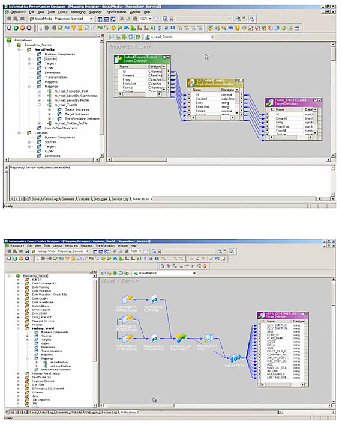
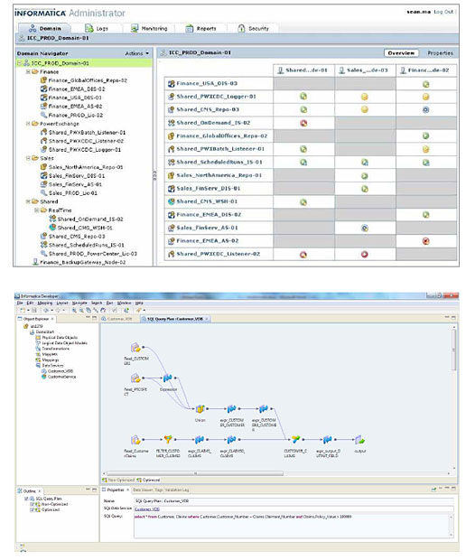

빅데이터 솔루션
현재 전 세계는 컴퓨팅의 장소, 대상 및 목적이 변화함에 따라 엄청난 변화를 겪고 있습니다.
다시 말해, 기업 내 솔루션에서 클라우드까지(장소), 트랜잭션 데이터에서 인터랙션 데이터까지(대상), 그리고 데스크톱에서
모바일까지(방법), 컴퓨팅의 모든 측면에 지대한 영향을 미치고 있습니다.
그러나 데이터의 볼륨, 다양성 및 속도의 성장세가 너무 빨라 현재까지 이를 제대로 활용하는 조직은 거의 없는 것이 현실입니다.
인포매티카 플랫폼은 빅 데이터 통합 기능을 통해 모든 빅 데이터 의 수익성을 극대화해 줍니다.
빅 데이터 통합은 데이터의 규모와 소스에 관계없이 데이터 액세스 및 통합을 가능하게 할 뿐 아니라, 모든 데이터를 하나로
통합하여 다른 방식으로는 불가능한 정보와 가치를 창출해 줍니다.
-
 개요
개요
빠르고 쉽고 비용 효율적인 엔터프라이즈 데이터 액세스 및 전달
PowerExchange는 IT 조직이 맞춤형 데이터 액세스 프로그램을 개발하지 않고도
모든 엔터프라이즈 데이터 소스에 손쉽게 액세스할 수 있도록 지원하는 데이터 액세스 제품군입니다.
미션 크리티컬한 운영 데이터의 보관 위치에 액세스하고 필요한 장소와 시간에 데이터를 전달함으로써
IT 조직이 제한된 리소스와 데이터의 비즈니스 가치를 극대화할 수 있습니다.
- 변경 사항 발생시 메타데이터 자동 캡처를 통해 신속하게 영향 평가 및 구축 작업을 수행함으로써 개발 비용 절감
- 파일을 추출하여 안전성이 떨어지는 환경으로 이전하는 것을 지양하고 데이터에 직접 액세스하여
- 중요 데이터에 대한 무단 액세스 방지
- 표준 기반 소스 및 타겟에 대한 신속한 액세스 제공을 통해 투자 수익(ROI)을 극대화하고
- 비즈니스 민첩성 제고
주요 기능
엔터프라이즈 데이터에 대한 빠른 액세스

- 엔터프라이즈 데이터 액세스 또는 업데이트를 위해 전문적 프로그래밍 기술이 필요치 않으며, 최소한의 노력으로 관리 가능
- 유연한 객체 필터링 기술을 사용하여 필요한 데이터를 신속하게 검색
- 포인트 앤 클릭(Point-and-Click) 인터페이스를 사용하여 개발을 가속화하고 오류 감소
각각의 환경에 최적화
- 각 환경의 기본 데이터 유형 및 특별 기능 지원
- 가능한 기본 인터페이스 및 고속 API 사용
- 목적 지향 설계 GUI를 통해 각 애플리케이션의 기능 이용 -
개요
엔터프라이즈 데이터 통합을 통해 데이터를 신속하고 비용 효율적으로 액세스, 통합 및 전달
PowerCenter는 확장성이 뛰어난 고성능 엔터프라이즈 데이터 통합 소프트웨어의 표준을 제시합니다.
PowerCenter는 IT 조직이 핸드 코딩에 의존할 필요없이 데이터 액세스, 변환 및 전달을 위한 단일화된
접근 방식을 구현할 수 있도록 해 줍니다.
이 소프트웨어는 대용량 데이터 볼륨을 지원하고 보안 및 성능에 관한 기업의 수요를 충족하도록 확장이 가능합니다.
PowerCenter는 데이터 거버넌스, 데이터 마이그레이션 및 엔터프라이즈 데이터 웨어하우징을 비롯한
모든 데이터 통합 프로젝트 및 엔터프라이즈 통합 이니셔티브의 기반이 됩니다.
- 적합한 정보를 적시에 제공할 수 있는 능력을 바탕으로, 기업이 보다 정확하고 시기적절한 비즈니스
의사 결정을 내리기 위해 필요로 하는 적시적이고 정확하며 신뢰할 수 있는 데이터를 필요할 때 제공
- 경제적인 확장을 통해 증가하는 데이터 요구를 충족하고 하드웨어 비용을 절감하는 한편
데이터 다운타임과 관련된 비용 및 위험 최소화
- 개발자, 분석가 및 관리자 팀이 작업의 공유 및 재사용을 통해 보다 빠르고 효과적인 협업을 수행함으로써
프로젝트를 조기에 완료할 수 있도록 지원
에디션별 주요 기능
Standard Edition
고성능 고확장성 엔터프라이즈 데이터 통합 소프트웨어의 표준을 제시합니다.
최고의 확장성, 보안성 및 안정성을 제공하는 Standard Edition은 데이터 웨어하우징 및 데이터
마이그레이션을 포함한 광범위한 데이터 통합 이니셔티브에 사용됩니다.
주요기능
- 범용 데이터 액세스, 데이터 통합 및 글로벌 메타데이터 서비스
- 뛰어난 개발 환경 및 생산성 툴
- 비즈니스 사용자를 위한 참조 테이블 매니저
- IT 사용자를 위한 Visio용 매핑 설계
Advanced Edition
전사적 차원에서 수많은 프로젝트와 부서를 아우르는 데이터 통합의 표준화를 실현하고자 하는
IT 조직을 위한 솔루션입니다.
이 에디션에는 데이터 거버넌스 및 ICC(Integration Competency Center)에 가장 적합한
강력한 기능이 포함되어 있습니다.
주요기능
- IT 사용자를 위한 Metadata Manager
- 비즈니스 사용자를 위한 Business Glossary
- 동시 데이터 처리를 위한 동적 파티셔닝
- 리소스 활용도 최적화를 위한 Workflow on Grid
Big Data Edition
Highly scalable, high-performance enterprise data integration software that works with both emerging
technologies, such as Hadoop, and traditional data management infrastructures. It provides a safe
on-ramp to big data, enabling your IT organization to integrate and analyze new types and sources
of data. With this edition, developers triple their productivity by moving away from hand coding to
a no-code visual development environment. Data scientists and analysts can focus on big data
insights—not on data integration. This edition provides a proven path of innovation while reducing big
data management costs and minimizing risk.
Key Features
- Data integration, ETL, data profiling, complex data parsing on Hadoop
- Design once, deploy anywhere with no-code productivity
- Universal access to big transaction and big interaction data
- High-speed data ingestion and extraction, unlimited scalability, and 24x7 high availability
Data Virtualization Edition
현업 부서와 IT 부서가 운영에 대한 완벽하고 신뢰할 수 있는 최신 정보를 몇 개월 단위가 아니라
며칠 내에 제공할 수 있도록 지원합니다. Standard Edition의 모든 기능을 포함하고 있는 것은 물론,
생산성과 민첩성을 높이는 기능을 추가로 제공합니다.
주요 특징
- 공통 메타데이터를 공유하는 역할 기반 툴
- Federated Data의 통합적인 Any-Stage 데이터 프로파일링
- 델 중심 및 메타데이터 기반 데이터 서비스 생성
- 데이터 통합 및 데이터 페더레이션을 위한 단일 고성능 환경
Real-Time Edition
운영 데이터를 실시간으로 통합 및 프로비저닝하고자 하는 IT 조직을 위한 솔루션입니다.
강력한 단순성과 유연성이 특징인 이 에디션은 SOA(Service-Oriented Architecture)를 통해 정교한
데이터 서비스를 개발하고 전달할 수 있는 능력을 IT 조직에 부여합니다.
주요 특징
- 관계형 데이터 소스에 대한 변경 데이터 캡처(CDC)
- 메시징 시스템과 통합
- 기본 웹 서비스 및 동적으로 확장 가능한 데이터 서비스 지원
- 동시 데이터 처리를 위한 동적 파티셔닝
Cloud Edition
세계 최초의 클라우드 데이터 통합 인프라입니다. 진정한 가상 컴퓨팅 환경에서 실행되도록 설계된 이
에디션은 클라우드 기반의 데이터를 기업 내 시스템의 데이터와 통합하고자 하는 IT 조직을 위한 솔루션입니다.
주요 특징
- 정교한 클라우드 기반 데이터 통합 서비스
- 비즈니스 사용자를 위한 웹 기반 인터페이스
- 무제한 확장성을 위한 동적 파티셔닝
- 연속적 데이터 처리를 위한 무지연(Zero-latency) 엔진
